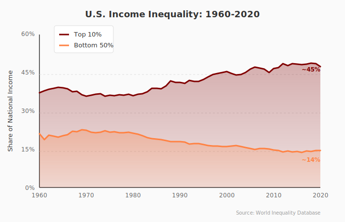
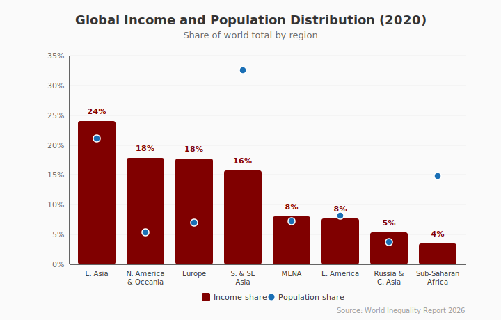
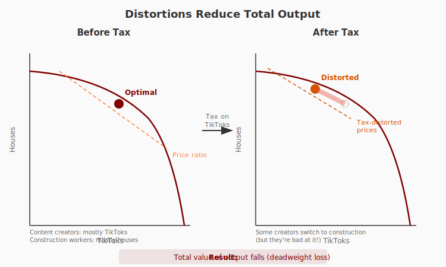

Equity vs. Efficiency
Economics for Everyone
Recall our last class
We created a market for extra credit.
The outcome was efficient—we exhausted all gains from trade.
But was it fair?
A question of endowments
Some of you happened to be given an extra credit point.
Some of you didn’t.
Even though the market outcome maximized total surplus, who benefited depended entirely on those initial endowments.
The fundamental distinction
Efficiency asks: How big is the pie?
Equity asks: How is the pie divided?
Failure to separate these is probably one of the biggest conceptual mistakes in policy today.
Today’s roadmap
- Trends in inequality
- What “fairness” means
- Ideal redistribution (and why it’s impossible)
- The costs of real-world redistribution
- When distortions are actually good
Key Concepts
Efficiency
Whether the economy is set up to generate the maximum total benefits
Efficiency is about the size of the pie.
An efficient allocation leaves no gains from trade unexploited.
Equity
Whether the distribution of benefits is judged to be fair
Equity is about how the pie is divided.
Note: This is a normative judgment—outside economics per se.
Distortions
When policy drives a wedge between social value and private return
Distortions cause people to make decisions that don’t maximize total surplus.
They’re usually the cost of achieving a more equitable distribution.
Deadweight loss
The loss in total benefits that results from distortions
When we redistribute, the pie often shrinks.
Deadweight loss measures how much it shrinks.
Second best
The lowest-cost way to achieve a particular distribution
If we can’t achieve equity for free, what’s the most efficient way to get there?
Inequality 101
Where do we stand?
US income inequality: The headline
What happened?
From ~1980 onward:
- Top 10% share rose from ~35% to ~45%
- Bottom 50% share fell from ~20% to ~13%
The gains from economic growth went disproportionately to the top.
Another perspective: Top 1%
The top 1% now earns about 20% of all income.
In the 1970s, it was closer to 10%.
The very top has pulled away even from the rest of the top 10%.
Wealth inequality is even starker
Income: What you earn each year
Wealth: What you own (assets minus debts)
The top 1% owns roughly 30% of all wealth.
The bottom 50% owns about 2%.
A global perspective
The elephant curve
Over the past 40 years, who gained the most globally?
- The global middle class (especially China, India)
- The global top 1%
Who gained the least?
The working and middle classes in rich countries.
Why does this matter?
Inequality affects:
- Political stability
- Social mobility
- Health outcomes
- Trust in institutions
But whether it’s a problem depends on your values.
What Is Fairness?
Different philosophical perspectives
Let’s find out what you think
I’m going to describe some scenarios.
For each one, tell me what the fair outcome is.
[Poll: pollev.com/e4e]
Scenario 1: The shipwreck
You’re on a lifeboat with 10 others. You have 100 units of food.
Option A: Everyone gets 10 units
Option B: The person who can ration best distributes it (total consumed: 120 equivalent units due to efficiency)
Option C: Whoever grabbed it first keeps it
What’s fair?
Scenario 2: The inheritance
A wealthy person dies. Should their children:
A: Inherit everything (property rights)
B: Inherit nothing—it goes to charity (equal opportunity)
C: Inherit some, with the rest taxed (compromise)
What’s fair?
Scenario 3: The kidney
One kidney is available. Three patients need it:
A: A 25-year-old who will live 40 more years
B: A 65-year-old who invented a life-saving drug
C: Whoever has waited longest on the list
What’s fair?
The point
There’s no consensus on what “fair” means.
Different frameworks give different answers.
Let’s look at the main ones.
Utilitarianism
Maximize total well-being across all people.
Implication: Transfer resources until marginal utility is equalized.
If a dollar means more to a poor person than a rich person, transfer it.
Problem: Doesn’t care about distribution per se—only totals.
Rawlsian maximin
Maximize the well-being of the worst-off person.
John Rawls asked: What rules would you choose behind a “veil of ignorance”?
If you didn’t know your place in society, you’d protect the bottom.
Problem: Ignores everyone except the very worst off.
Libertarianism
Respect property rights and voluntary exchange.
Whatever distribution emerges from fair processes is fair.
Problem: Ignores how initial endowments were acquired.
Equality of opportunity
Everyone should have the same starting point.
Inequality of outcomes is okay if it results from fair competition.
Problem: Hard to define and achieve equal starting points.
Equality of outcomes
Everyone should end up with the same amount.
Problem: Eliminates incentives; practically impossible.
Where do you stand?
[Poll: Which framework resonates most with you?]
- Utilitarian (maximize total well-being)
- Rawlsian (protect the worst off)
- Libertarian (respect property rights)
- Equal opportunity
- Equal outcomes
The economist’s role
Economics can’t tell you which framework is “right.”
That’s a normative judgment—a question of values.
But economics can tell you:
What are the costs of achieving different distributions?
Ideal Redistribution
The Second Welfare Theorem
A remarkable result
Suppose the market allocation differs from your preferred “fair” outcome.
Can we get to the fair outcome without losing efficiency?
Yes—in theory.
The Second Welfare Theorem
Any efficient allocation can be achieved by:
- Redistributing initial endowments
- Then letting the market work
If we could just reshuffle who starts with what, markets would do the rest.
Back to our classroom market
Imagine I wanted to help students who most need the extra credit.
Ideal solution: Give the initial extra credit points to them instead.
Then let the market play out normally.
Efficient and equitable!
The catch
This requires lump-sum taxes and transfers.
Lump-sum means:
- Pre-specified amounts
- Do not depend on your behavior or choices
Like a fixed tax you pay regardless of what you do.
Why lump-sum works
If a tax doesn’t depend on your choices, it doesn’t distort them.
You face the same incentives as before—you just start with less money.
No deadweight loss. No distortion. Just redistribution.
The problem
What could we actually tax in a lump-sum way?
We’d need to tax something immutable—that you can’t change.
One serious proposal: tax height.
Wait, really?
Mankiw & Weinzierl (2010) showed:
- Taller people earn more on average
- Height is (mostly) genetically determined
- A height tax would be non-distortionary
“The case for taxing height is about as good as the case for taxing income.”
Nobody actually proposes this. But it illustrates the problem.
Why we can’t do lump-sum
We can’t observe the things we’d need to observe:
- Innate ability
- Effort capacity
- Future earnings potential
So we tax things we can observe: income, wealth, consumption.
But these depend on choices—so taxes distort behavior.
The Cost of Redistribution
Why can’t we just tax the rich?
A simple idea
Rich people have a lot of money.
Poor people need money.
Why not just tax the rich and give to the poor?
The behavioral response
We covered this in our lecture on incentives.
When you tax income, you change the return to working.
Higher taxes → work becomes less attractive → people work less.
Recall the Laffer curve

At some point, raising rates actually lowers revenue.
The real cost
Even before we hit the peak, higher taxes cause:
- Reduced labor supply
- Less entrepreneurship
- More tax avoidance
The tax base shrinks—so the pie gets smaller.
The tradeoff
We can make the distribution more equal…
…but often at the cost of a smaller pie.
This is the fundamental equity-efficiency tradeoff.
How big is this cost?
Remember the elasticity of taxable income?
Best estimates suggest it’s around 0.25.
Not zero—but not enormous either.
We can redistribute, but there’s a cost.
An illustration with our workers
Let’s go back to our construction workers and content creators.
Suppose society decides it’s unfair that TikTokers might earn more than construction workers.
Policy: Tax TikTok earnings and subsidize construction wages.
What happens?
The tax drives a wedge between what consumers pay and what creators receive.
Some content creators switch to construction work.
But wait—these are people whose comparative advantage is in TikToks!
The distortion visualized
The math
Before the tax: \[P_H \cdot H_0 + P_T \cdot T_0 = \text{Total Value}\]
After the tax, people reallocate. But: \[P_H \cdot H_1 + P_T \cdot T_1 < P_H \cdot H_0 + P_T \cdot T_0\]
Total value produced has fallen—even though we collected tax revenue.
Why the loss?
We’ve shifted production to people who are relatively bad at it.
Content creators forced into construction produce fewer houses than real construction workers would.
Construction workers staying put don’t make up the difference.
Deadweight loss: The economy produces less than it could.
What if we used lump-sum transfers?
Suppose we could tax content creators a fixed amount—regardless of whether they work in TikTok or construction.
Then the tax doesn’t affect their work decisions.
No reallocation. No distortion. No deadweight loss.
But we can’t observe “being a content creator” independent of their choices.
Can Distortions Be Good?
Yes—when correcting externalities
Recall externalities
An externality is when your action affects others who aren’t part of the transaction.
- Negative: Pollution, congestion, secondhand smoke
- Positive: Vaccination, education
The problem with externalities
Without intervention, markets produce:
- Too much of goods with negative externalities
- Too little of goods with positive externalities
Prices don’t reflect the true social costs and benefits.
The Pigouvian solution
Arthur Pigou’s insight: Tax negative externalities, subsidize positive ones.
A tax equal to the external cost makes people internalize the harm.
A distortion that corrects a market failure can increase efficiency.
Carbon tax example
Burning fossil fuels causes climate change.
A carbon tax makes polluters pay for this harm.
Result: Less pollution, and higher total surplus.
This is a “good” distortion—it fixes a broken price signal.
The key insight
Distortions are costly when they push us away from efficiency.
But when markets are already failing, the right distortion can push us toward efficiency.
Are Distortions Necessary?
Sometimes we need revenue
Public goods
Some goods can’t be provided by markets:
- National defense
- Basic research
- Public health infrastructure
These require tax revenue to provide.
The necessity of taxes
If we need taxes to fund public goods, we’ll have some distortion.
The goal isn’t to eliminate distortion—it’s to minimize it.
Raise the revenue you need in the least costly way possible.
Efficient taxation
Economic research suggests:
- Broad bases, low rates minimize distortion
- Tax things that are hard to change (land, consumption)
- Avoid taxing things that are easy to move (capital, mobile workers)
This is why economists often prefer consumption taxes to income taxes.
Is There Always a Tradeoff?
Sometimes we can do both
In rare cases, we can increase both efficiency and equity:
- Removing regulations that protect the wealthy (occupational licensing, zoning)
- Fixing market failures that hurt the poor (predatory lending, pollution in poor neighborhoods)
- Investing in human capital (education for disadvantaged kids)
These are win-wins—but they’re not always available.
The hard cases
Most of the time, we face real tradeoffs.
More redistribution → more distortion → smaller pie.
The question isn’t whether to redistribute—it’s how much.
The answer depends on your values and the costs.
Wrapping Up
Key takeaways
- Efficiency and equity are distinct—don’t conflate size with distribution
- Fairness is normative—economics can’t tell you what’s fair
- Ideal redistribution is impossible—lump-sum taxes aren’t feasible
- Real redistribution has costs—distortions reduce total output
- Sometimes distortions help—when correcting externalities
Thinking like an economist
An economist holds both ideas in mind:
- Markets are powerful tools for efficiency
- Distribution matters and may require intervention
The goal is to understand the tradeoffs and quantify them.
Next time
We’ll explore how economists actually measure the effects of policies.
How do we know if a policy worked?
The answer: Causation and experiments.